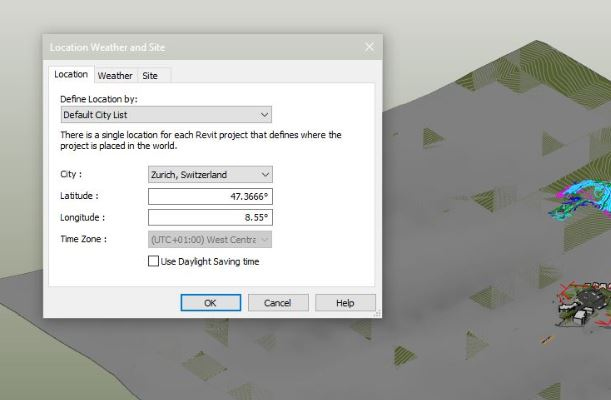
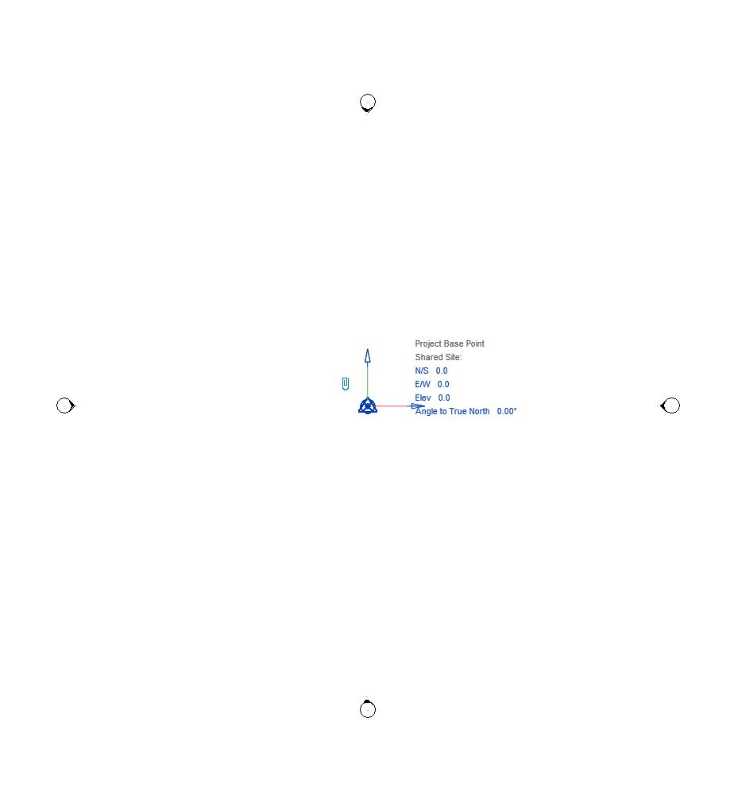
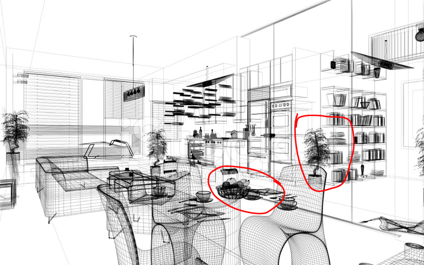
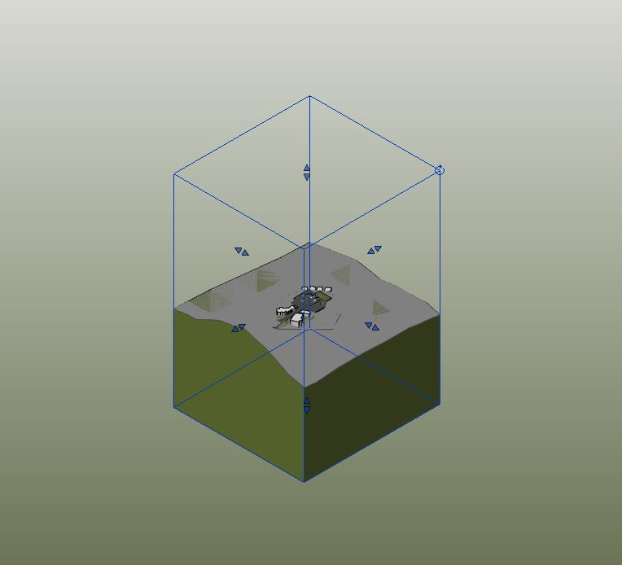
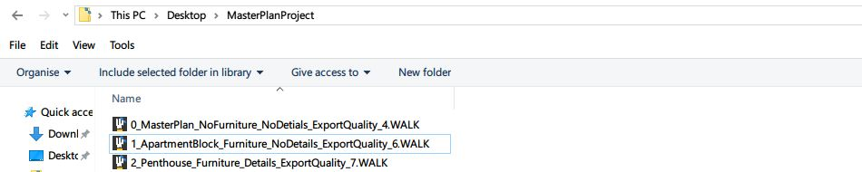
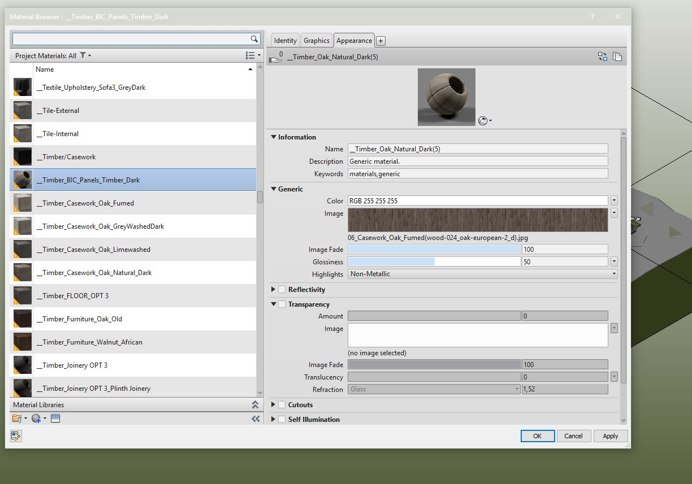

Content Preparation¶
Location and Model Info¶
Note
Lux Walker imports your location information from your Revit file. This allows for correct lighting and seasonal conditions for your project.
To do this you need to correctly set up your projects location and project north within your Revit project.
In Revit Click: Manage tab>Project Location panel> Location.
In the Location Weather and Site dialog, click the Location tab.
Specify the project location using one of these methods:
Default City List:
Nearest major city. For City, select a city from the list.
The corresponding Latitude, Longitude, and Time Zone values are displayed.
Exact location. Enter values for Latitude and Longitude.
Internet Mapping Service: For Project Address, enter the street address, city and state, or latitude and longitude of the project, and click Search.
Warning
Please ensure your True North is correctly set up so that sun angles are correct in LUX Walker.
Optimize your model¶
Note
When exporting to VR keep in mind that it needs to run as fast as possible so that the user does not experience motion sickness. Too many digital lines and geometries will slow down the project.
Hide elements and categories not required for discussion.
Limit your view distance.
Remove Complex Geometry and Unnecessary Detail.
Create a section box around what you would like to showcase.
Have a less detailed master plan
Section box areas or parts of the project with more detail.
Use objects and Vegetation from the LUX Walker Library.
Unnecessary Elements and Categories¶
Each category in Revit is exported as a Layer to LUX Walker. LUX Walker includes a library of items and entourage.
Note
Please disable items, families, categories and elements you do not need to see in VR.
Categories like: Massing, Entourage, Planting Can also be problematic, and can be replaced with LUX Walker items.
View Distance¶
Rendering distance has a massive impact on performance in LUX Walker. The panorama tool allows you to load in a panorama which you can use to create realistic context for your buildings. LUX Walker can also import context model around your site. Keep your projects and site extents as small as possible.
Note
If you absolutely need to load in a large 3D site model make sure you section box so your building is as close to the centre as possible.
Warning
If you do not section box do this you might have problems finding your project when LUX Walker has loaded.
Warning
Please ensure that your survey points and base points are correctly set up. If they are too far apart your file will appear empty. In the above example the survey point was thousands of units away from the model center.
Complex Geometry and Detail¶
Warning
Small and highly detailed items can cause slowdowns and issues with rendering in VR
When in doubt or the project runs slowly switch to wireframe view in Revit and inspect the file for complex objects. Anything that appears solid from a distance in wireframe mode can cause issues and slow downs. Use items from LUX Walker library where possible.
Section Box and Model Variations¶
You can the create a section box to crop your export. LUX Walker will download a large terrain around your project so use Revit topography sparingly or crop as close to project as needed.
Note
You can enable and disable linked files in your layer tool in LUX Walker. You can use this to your advantage by: Linking in two different variations of a project into a new Revit Project and switching between them using the layer panel.
Large Projects¶
When dealing with large projects with may units/structures/spaces to show export the project as different files.
Note
- We recommend making different exports:
Export a masterplan .WALK file without any furniture or details. Please make sure these elements are also off in your Linked Revit Files.
Create detail section box models of rooms or parts of the building.
This allows you to explore and discuss the project at various scales instead of focusing on micro details when macro elements are being discussed.
Items and Vegetation¶
Using LUX Walker detail items and vegetation will increase performance and make the experience faster and more realistic.
Note
- CAD imports and Complex Items in Revit are problematic. Items like:
Pillows, 3D Fire and smooth furniture items and CAD cars will cause slowdowns.
Note
- LUX Walker’s library includes pillows, bottles, glasses, books, cars, plates and vases and many more.
These items have been added to the library to reduce the impact on performance and give the user a better experience in VR.
Material Transfer¶
Note
Textures assigned to the Generic Slot in Revit will be exported along with color and transparency information.
Warning
If Use Render appearance is unchecked Color will be exported from here.
Note
- LUX Walker will automatically convert your Revit materials to something more realistic.
Keep in mind that all your settings will transfer including tint and fade settings. This means if you fade a material so it looks better in a Revit view it will come in as transparent in LUX Walker.
Common Issues¶
- LUX Walker is slow:
Reduce geometry quality using the quality slider. Remove unused details and objects from the export view.
Note
You can usually tell by the .WALK file whether it will be slow. Files over 200MB quickly get very slow.
- Materials are not correct in LUX Walker:
Ensure the material settings are correct in Revit. Materials with fade and tint will export these settings to LUX Walker.
Note
If you have told Revit to use render appearance then the render appearance will be exported to LUX Walker. Please also inspect your fade and color assignments as they also carry over.